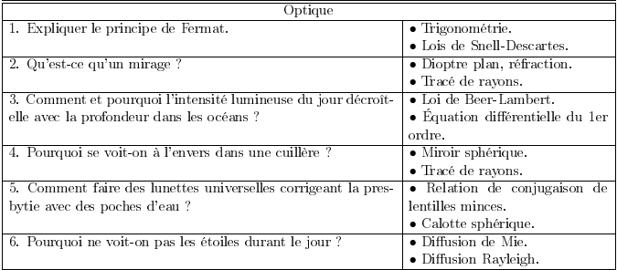
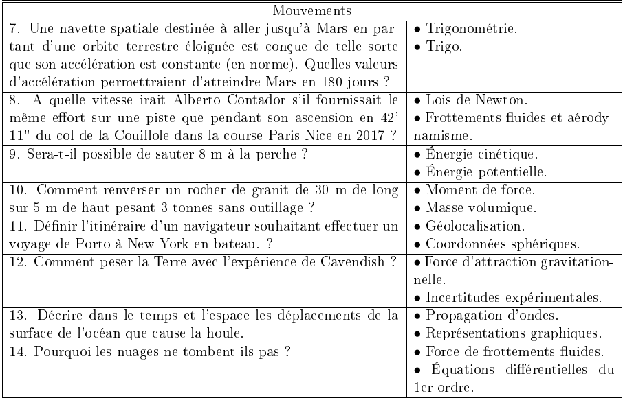
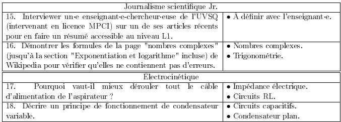
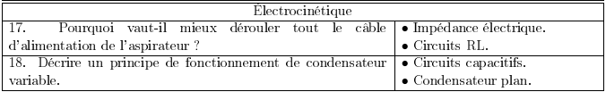
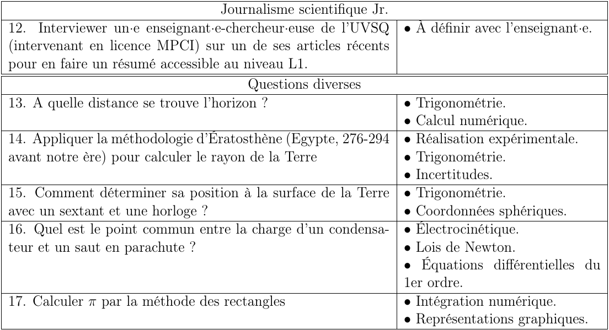
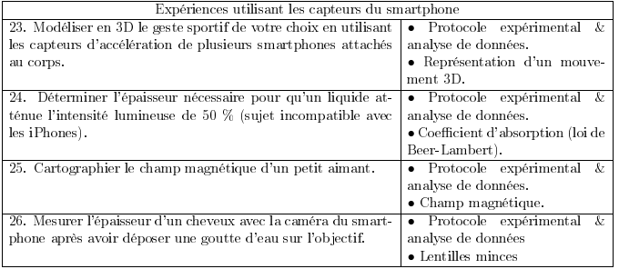

Liste des sujets#
     
| Intitulés des sujets | Points de cours |
|---|---|
| . Expliquer le principe de Fermat. | • Trigonométrie. • Lois de Snell-Descartes. |
| . Qu’est-ce qu’un mirage ? | • Dioptre plan, réfraction. • Tracé de rayons. |
| . Comment et pourquoi l’intensité lumineuse du jour décroît-elle avec la profondeur dans les océans ? | • Loi de Beer-Lambert. • Équation différentielle du 1er ordre. |
| . Pourquoi se voit-on à l’envers dans une cuillère ? | • Miroir sphérique. • Tracé de rayons. |
| . Comment faire des lunettes universelles corrigeant la presbytie avec des poches d’eau ? | • Relation de conjugaison de lentilles minces. • Calotte sphérique. |
| . Pourquoi les objets transparents ne sont-il pas invisibles ? | • Propagation lumineuse. • Dioptre plan. |
| . Pourquoi ne voit-on pas les étoiles durant le jour ? | • Diffusion de Mie. • Diffusion Rayleigh. |
| . Une navette spatiale destinée à aller jusqu’à Mars en partant d’une orbite terrestre éloignée est conçue de telle sorte que son accélération est constante (en norme). Quelle valeur d’accélération permettrait d’atteindre Mars en 180 jours ? | • Trigonométrie. • Trigo. |
| . A quelle vitesse irait Alberto Contador s’il fournissait le même effort sur une piste que pendant son ascension en 42’ 11" du col de la Couillole dans la course Paris-Nice en 2017 ? | • Lois de Newton. • Frottements fluides et aérodynamisme. |
| . Serait-il possible de sauter 8 m à la perche ? | • Énergie cinétique. • Énergie potentielle. |
| . Comment renverser un rocher de granit de 30 m de long sur 5 m de haut pesant 3 tonnes sans outillage ? | • Moment de force. • Masse volumique. |
| . Définir l’itinéraire d’un navigateur souhaitant effectuer un voyage de Porto à New York en bateau. ? | • Géolocalisation. • Coordonnées sphériques. |
| . Comment peser la Terre avec l’expérience de Cavendish ? | • Force d’attraction gravitationnelle. • Incertitudes expérimentales. |
| . Décrire dans le temps et l’espace les déplacements de la surface de l’océan que cause la houle. | • Propagation d’ondes. • Représentations graphiques. |
| . Pourquoi les nuages ne tombent-ils pas ? | • Force de frottements fluides. • Équations différentielles du 1er ordre. |
| . Interviewer un·e enseignant·e-chercheur·euse de l’UVSQ (intervenant en licence MPCI) sur un de ses articles récents pour en faire un résumé accessible au niveau L1. | • À définir avec l’enseignant·e. |
| . Démontrer les formules de la page "nombres complexes" (jusqu’à la section "Exponentiation et logarithme" incluse) de Wikipedia pour vérifier qu’elles ne contiennent pas d’erreurs. | • Nombres complexes. • Trigonométrie. |
| . Pourquoi vaut-il mieux dérouler tout le câble d’alimentation de l’aspirateur ? | • Impédance électrique. • Circuits RL. |
| . Décrire un principe de fonctionnement de condensateur variable. | • Circuits capacitifs. • Condensateur plan. |
| . Appliquer la méthodologie d’Ératosthène pour calculer le rayon de la terre | • Trigonométrie. • Incertitudes. |
| . Comment déterminer sa position à la surface de la Terre avec un sextant et une horloge ? | • Trigonométrie. • Coordonnées sphériques. |
| . Montrer par l’expérience les inconvénients qui peuvent survenir lors de la conversion en mono d’un signal stéréo ? | • Propagation d’onde. • Phase d’une onde. |
| . Quel est le point commun entre la charge d’un condensateur et un saut en parachute ? | • Électrocinétique. • Lois de Newton. • Équations différentielles du 1er ordre. |
| . Peut-on décrire un phénomène réel avec un nombre imaginaire ? | • Nombres complexes. • Équations différentielles du 1er ordre. |
| . Modéliser en 3D le geste sportif de votre choix en utilisant les capteurs d’accélération de plusieurs smartphones attachés au corps. | • Protocole expérimental & analyse de données. • Représentation d’un mouvement 3D. |
| . Déterminer l’épaisseur nécessaire pour qu’un liquide atténue l’intensité lumineuse de 50 % (sujet incompatible avec les iPhones). | • Protocole expérimental & analyse de données. • Coefficient d’absorption (loi de Beer-Lambert). |
| . Cartographier le champ magnétique d’un petit aimant. | • Protocole expérimental & analyse de données. • Champ magnétique. |
| . Mesurer l’épaisseur d’un cheveux avec la caméra du smartphone après avoir déposer une goutte d’eau sur l’objectif. | • Protocole expérimental & analyse de données • Lentilles minces |